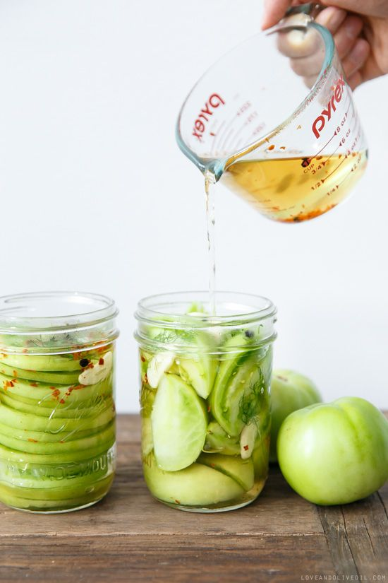
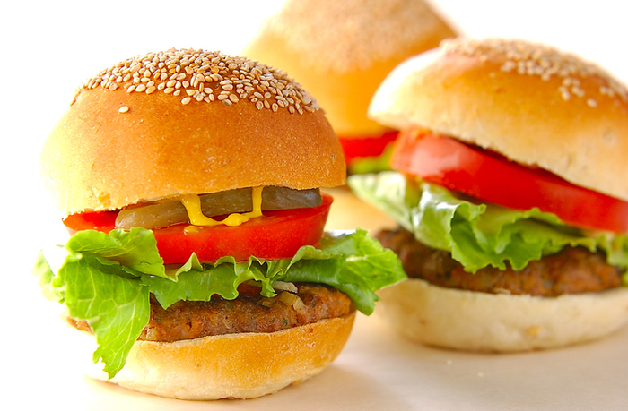
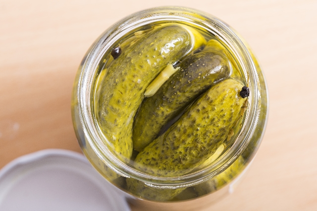

ピクルスのご紹介
ピクルスは欧米を代表する酢を使った漬物です。
発酵させるものとさせないものの2種類があり、発酵させないピクルスは酢などに漬け込みます。 発酵させるものは乳酸発酵をさせて酸味を出します。
ハンバーガーに使われるきゅうりのピクルスは、香辛料をきかせた砂糖液に漬け込んだり、ディルと いう香草と一緒に漬け込んだりしたものです。中にはにんにくと一緒に漬け込む場合があります。
ホットドッグのソーセージの上に散らばすピクルスはレリッシュピクルスといい、 砂糖液に漬け込んだものを細かく刻んだものです。
カクテルのマティーニなどに添えられるオリーブのピクルスは、ワインビネガーに漬け込んだものです。 日本の漬物と違うところは、ピクルス液を作らなければいけないところです。
鍋を使って火にかけて作ります。このピクルスを漬け込む液さえ作ってしまえば、あとは簡単に様々な ピクルスを作ることができます。自分だけのオリジナルピクルスを作ってみませんか？
酢の効果

疲労回復
お酢の効果で良く耳にするのがこの「疲労回復」効果ではないでしょうか？ 普段生活をしていると体には自然に乳酸やピルビン酸などの疲労物質が蓄されていきます。 これらの疲労物質をピクルスの主成分である酢酸が分解してくれるのです。

食欲増進
ピクルスを一口食べると心地よい酸味と甘みが口一杯に広がっていきます。 その酸味が味覚や嗅覚を刺激して、食欲をコントロールしている脳の摂食中枢に働きかけて食欲がわいてくるという仕組みです。

ダイエット効果
ピクルスには体重を正常に保つようコントロールしてくれる効果があるのですが、 これは体内の老廃物や有毒物質を取り除いてくれたり、アミノ酸が新陳代謝を高め体内に取り込んだ栄養分を消費するように働きかけるからです。 そして、脂肪分解の役割を持つ酵素リパーゼを活性化させ、悪玉コレステロールを分解、 さらに余分な栄養分を分解して蓄積されるのを防ぐ働きを持っています。
基本ピクルス液の食材
| ①酢 | 2カップ |
|---|---|
| ②白ワイン | 1カップ |
| ③水 | 3/4カップ |
| ④砂糖 | 80g |
| ⑤塩 | 小さじ2 |
| ⑥にんにく（スライス） | 1片 |
| ⑦赤唐辛子 | 2本 |
| ⑧ローリエ | 2枚 |
| ⑨粒こしょう | 小さじ2 |
保存瓶
地図住所
東京都新宿区新宿３－１７－１
無印良品新宿店